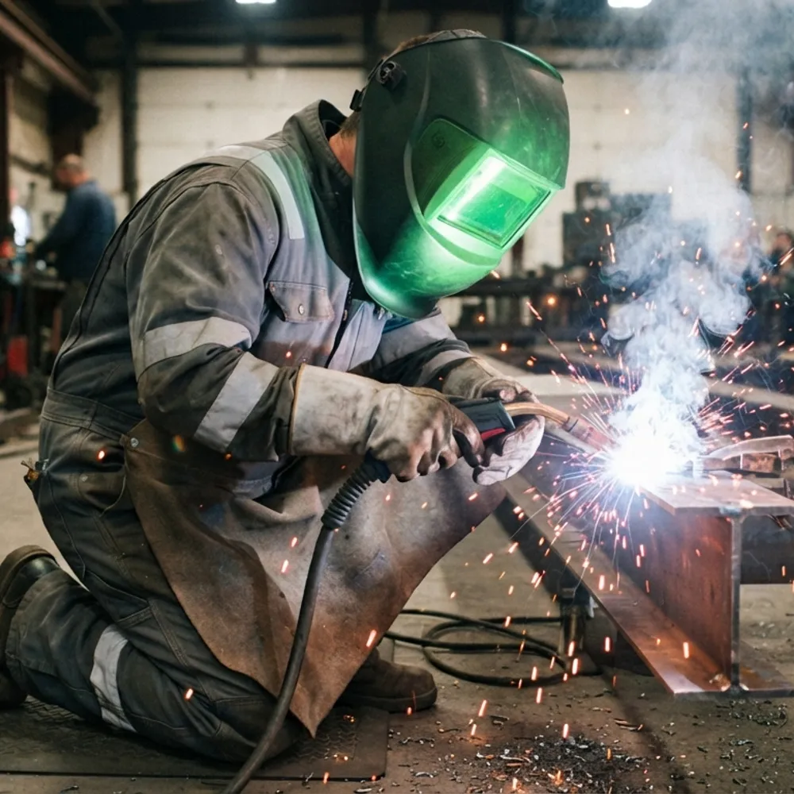

Roles / Welding & Fabrication
Spatter, radiant heat and molten metal decide what a welder wears — not the job title. Here's the standard you actually need by process, the classes that matter, and how to keep the rating intact wash after wash.

Why standard coveralls aren't enough
A poly-cotton work coverall can melt onto skin. Welding kit is chosen against specific, testable hazards — and each maps to a specific standard clause.
Globules of molten metal thrown from the arc. The garment must resist ignition and let particles roll off, not lodge and smoulder.
EN ISO 11611 — spatter dropsSustained heat from the arc and workpiece. Rated by how long the fabric delays heat transfer to the skin.
EN ISO 11611 — RHT / heatHeavy processes shed larger volumes of molten metal — covered by a dedicated code letter for molten iron.
EN ISO 11612 — code EThe standards, plainly
Four standards cover the welding hazards above. You always need the first; the rest depend on your work.
| Standard | Protects against | Classes / codes | Who needs it |
|---|---|---|---|
| EN ISO 11611 Welding & allied processes | Spatter, short contact with flame, radiant heat | Class 1 — lighter processes Class 2 — heavier processes & more spatter | Every welder |
| EN ISO 11612 Heat & flame (general) | Flame spread (A), heat (B/C/F), molten metal (D/E) | Code letters, e.g. A1 B1 C1 E | Heavy welding, molten-metal exposure |
| IEC 61482 Electric arc | Thermal effects of an arc flash | ATPV (cal/cm²) or APC 1 / APC 2 | Welders also working live-electrical |
| EN 1149-5 Electrostatic | Static discharge in flammable atmospheres | Surface resistance / decay | Fuel, solvent or explosive-atmosphere sites |
Note: EN ISO 11611 also carries two heat classes (A1/A2) describing the test method for limited flame spread. The class number (1/2) is the spatter & radiant-heat level — that's the one to match to your process.
Interactive
Answer three quick questions. This is genuine utility no supplier feed can copy — and it's the kind of page unit that scales without duplicating.
Guidance based on EN ISO 11611 process categories. It doesn't replace your site risk assessment — it gets you to the right starting spec.
Choosing the garment
Two coveralls can both say "EN ISO 11611 Class 2" and behave very differently over a year of washes. This is the comparison that actually helps a buyer — built from spec, not marketing copy.
Flame resistance is built into the fibre (e.g. aramid / modacrylic blends). It cannot wash out.
A chemical finish makes cotton flame-resistant. Comfortable, but the finish has a finite life.
Keeping the rating
FR clothing fails quietly — a softened, oil-soaked or over-washed coverall can still look fine and no longer protect. The rules are simple and non-negotiable.
Questions
The welding-specific standard is EN ISO 11611, protective clothing for use in welding and allied processes. It has two classes: Class 1 for less hazardous techniques with lower spatter and radiant heat, and Class 2 for more hazardous techniques and heavier spatter. Many welders also need EN ISO 11612 for general heat and flame, and IEC 61482 if there is an electric-arc risk.
The classes reflect how much spatter and radiant heat the garment is tested to withstand. Class 1 suits lighter processes such as TIG and light MIG on a bench. Class 2 is for heavier MIG/MAG, MMA stick welding, overhead work, plasma and gouging, where spatter and molten metal are greater. Class 2 is tested to a higher number of spatter drops and a higher radiant-heat transfer.
You can, but the rules matter more than the machine. Never use fabric softener or chlorine bleach — both can coat or degrade the fibres and mask or reduce flame resistance. Wash below the garment's stated maximum temperature, keep FR garments away from oil- and solvent-contaminated items, and repair only with FR thread and fabric. Treated-cotton FR has a finite number of washes; inherent FR keeps its protection for the life of the garment.
Only if there is an electric-arc hazard — for example working on or near live electrical equipment as well as welding. Arc protection is covered by IEC 61482 (arc rating expressed as ATPV or as arc protection class APC 1 or 2), which is separate from the welding standard EN ISO 11611. Pure welding without an electrical hazard does not by itself require arc-rated clothing.
Match the standard from the finder to a certified garment — and add embroidery, sizing and trade-account ordering in the shop.